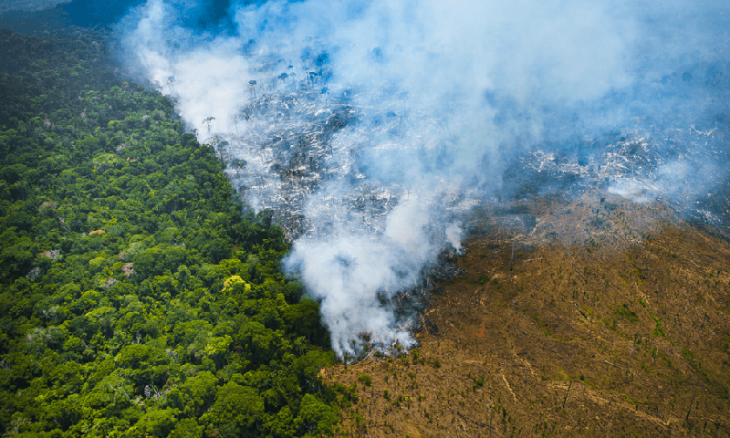

Desmatamento na Amazônia
O desmatamento na Amazônia é um problema ambiental que ameaça um dos principais biomas do mundo. O aumento nas taxas é uma realidade que preocupa a comunidade internacional.
O desmatamento é um grave problema ambiental que ameaça a estabilidade da Amazônia.
O desmatamento da Amazônia é um problema ambiental de grande relevância que tem preocupado cientistas, ambientalistas e governos em todo o mundo. A Amazônia é a maior floresta tropical do planeta, abrangendo nove países da América do Sul, sendo a maior parte localizada no Brasil. Essa região desempenha um papel crucial na manutenção do clima global, na biodiversidade e no equilíbrio dos ecossistemas.
Infelizmente, o desmatamento na Amazônia tem ocorrido há várias décadas, principalmente impulsionado por atividades ilegais, como a exploração madeireira ilegal e a conversão de áreas florestais em pastagens e plantações. Os principais impulsionadores do desmatamento são a pecuária extensiva, a agricultura em larga escala, a mineração e a expansão da infraestrutura, como estradas e represas.
O desafio do desmatamento na Amazônia é complexo e exige um compromisso global para proteger esse patrimônio natural de importância vital para o planeta. A conscientização, a educação ambiental e a mobilização da sociedade são fundamentais para pressionar por mudanças positivas e garantir a preservação dessa rica e frágil região.
Os impactos do desmatamento da Amazônia são significativos e de longo alcance. Primeiramente, a floresta amazônica é um importante sumidouro de carbono, ajudando a mitigar as mudanças climáticas ao absorver grandes quantidades de dióxido de carbono da atmosfera. Com o desmatamento, grandes quantidades de carbono são liberadas na atmosfera, contribuindo para o aumento do efeito estufa e acelerando as mudanças climáticas.
Além disso, a Amazônia abriga uma imensa diversidade biológica, com milhões de espécies de plantas, animais e micro-organismos. A perda de habitat devido ao desmatamento coloca em risco essa biodiversidade, levando à extinção de espécies e prejudicando os serviços ecossistêmicos que a floresta fornece, como a polinização das plantas e a regulação dos ciclos hidrológicos.
O desmatamento também afeta as populações indígenas que habitam a região amazônica, muitas das quais dependem da floresta para sua subsistência e identidade cultural. A destruição de seus territórios tradicionais e recursos naturais ameaça suas formas de vida e resulta em conflitos sociais e violações dos direitos humanos.
Nos últimos anos, o desmatamento na Amazônia tem aumentado preocupantemente. As políticas de proteção ambiental têm sido enfraquecidas, o que resultou em um maior incentivo às atividades ilegais e na impunidade para os infratores. No entanto, também existem esforços significativos de governos, organizações não governamentais e comunidades locais para combater o desmatamento e promover o desenvolvimento sustentável na região.
A preservação da Amazônia requer ações integradas e coordenadas em várias frentes. Isso inclui o fortalecimento da fiscalização e da aplicação da lei para combater a exploração ilegal, a promoção de práticas agrícolas sustentáveis e a implementação de políticas de conservação que valorizem a floresta em pé, além do apoio a iniciativas de desenvolvimento sustentável que beneficiem as comunidades locais.